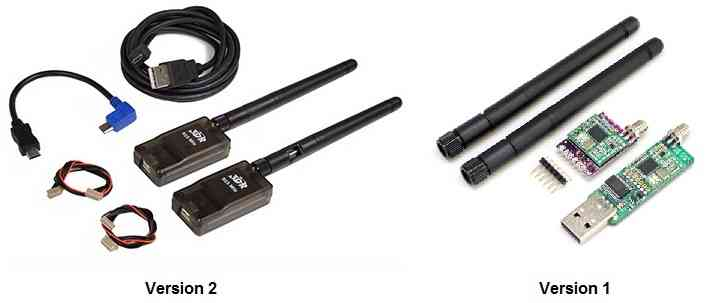

[copywiki destination=”plane,copter,rover,blimp”]¶
3DR Radio v1¶
This article explains how to connect the 3DR Radio v1 to your flight controller. You should also read SiK Radio v2, which contains a more detailed user guide and feature list.
{kind=link}
3DR Radio v1¶
Overview¶
The 3DR Radio is the easiest way to setup a telemetry connection between your autopilot and a ground station.
There are two versions of the 3DR Radio (version 2 is more recent, see link above). The radios have slightly different form factors and connections (v2 comes with a built-in FTDI cable) but otherwise their behaviour is very similar.
{kind=link}
.
This article only covers the main difference between the two radios — connecting the radios.
Connecting the radio¶
3DR Radio v1 has different radio modules for air and ground:
The “ground” module has a USB connector making it easy to connect directly to your ground station. On a windows 7 or higher machine, the require drivers should be automatically installed the first time you plug in the ground module but if it does not install for some reason or the ground computer is running Windows XP (or earlier) you can get the D2XX FTDI driver here.
The ‘aircraft’ module has a FTDI six pin header, allowing it to be directly connected to your Autopilot’s telemetry port as shown in the following sections.
Connecting to the AutoPilot¶
The aircraft module will be need to be connected to an autopilot’s serial port, sometimes marked as TELEM1 or TELEM2. The TX and RX pins of the radio to the RX and TX signals of the Serial port. If the port has CTS and RTS pins, then connecting them will provide flow control and increased reliability at longer ranges. The SERIALx_PROTOCOL for the UART port to which the module is connected should be set to “2” (MAVLink2).Be sure that the radio is programmed with the latest firmware in order to work properly with MAVLink2 protocol. See the section below for programming.
{kind=link}
Changing Configuration of the Radio¶
This is not usually required, but if desired see: [copywiki destination=”plane,copter,rover,blimp”]
Updating the Firmware¶
Using Mission Planner, with the module connected to the autopilot for power and the base USB unit plugged into the computer:
determine the USB COMM port the base radio is using and enter that into the port selection box of Mission Planner along with the baud rate (57600 is defualt for the radios).
WITHOUT connecting anything in Mission Planner, use the SETUP/Optional Hardware/Sik Radio utility tab to “Upload Firmware (local)” which will download the latest firmware and write it to the radios.
You may now CONNECT to the base radio COMM port with Mission Planner over MAVLink using the radio links.
If you have any problems, be sure that the autopilot’s SERIAL port connected to the radio is set to the baud rate (57600 default) and the protocol is MAVLink2 (“2”)